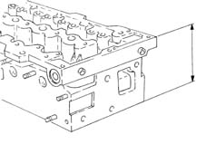

1016E38 single cylinder head or (one) l or r, removed - grinding
- Path
- Procedures > 10 ENGINE > 1016 CYLINDER HEAD/S > 1016E cylinder head/s - various operations > 1016E38 single cylinder head or (one) l or r, removed - grinding
- Kind
- repair procedure (removal / refitting; the operation number is the code)
- Applies to
- engines: 1.3 JTD; all production periods
- Interactive page
- https://sloeber94.github.io/elrnDB-lYpsln/en/#/2429767
Applies to: engines: 1.3 JTD; all production periods
Check that the planarity of the lower cylinder head surface is within the recommended values.
 | Measurement | Value | |
|---|---|---|---|
- | Flatness of bottom surface (mm) | 0.1 |
If the planarity of the lower cylinder head surface is not within the recommended values, regrind it starting from the nominal height of the head and, at the end of the operation, positioning a new gasket with the number of references indicated below.
The head can be reground by 0.1 mm if starting with a gasket with 0 references and using a new gasket with 1 reference.
The head can be reground by 0.2 mm if starting with a gasket with 0 references and using a new gasket with 2 references.
The head can be reground by 0.1 mm if starting with a gasket with 1 reference and using a new gasket with 2 references.
| Measurement | Value | |
|---|---|---|---|
- | Nominal lift (mm) | 105.5 ± 0.05 |
